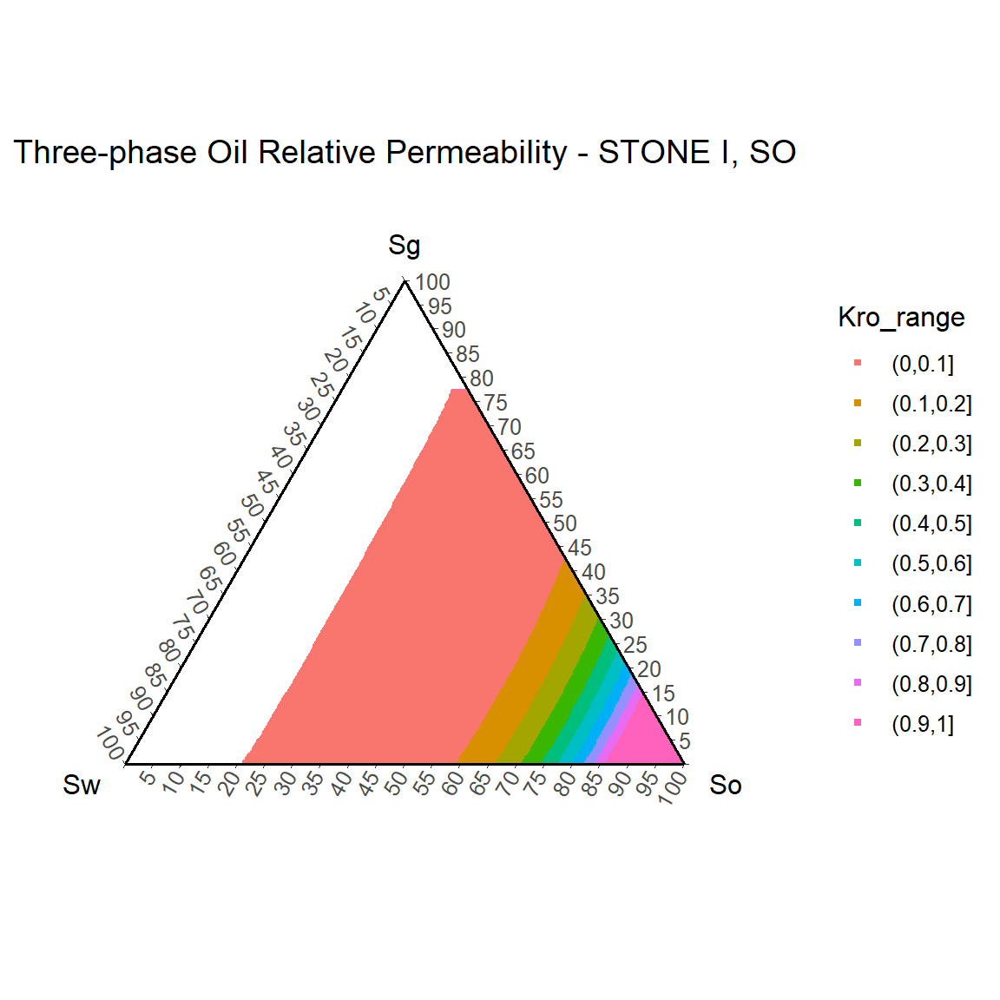

RelativePermeability.RmdRrelperm generates relative permeability values for two- and/or three-phase mixtures of water and hydrocarbons. It estimates the two-phase relative permeabilities for the water-oil and gas-liquid systems in a tabular format using the modified Brooks-Corey correlation (Brooks & Corey, 1964). It calculates the three-phase relative permeabilities using the modified Stone I, Stone II, and Baker’s linear models (Baker, 1988; Fayers & Matthews, 1984; Stone, 1970).
kr2p_ow() arguments
SWCON: connate water saturation, fraction.SWCRIT: critical water saturation, fraction.SOIRW: irreducible oil saturation, fraction.SORW: residual oil saturation, fraction.KRWIRO: water relative permeability at irreducible oil.KROCW: oil relative permeability at connate water.NW: exponent term for calculating krw.NOW: exponent term for calculating krow.NP: number of saturation points in the table, the maximum acceptable value is 501.kr2p_gl() arguments
SWCON: connate water saturation, fraction.SOIRG: irreducible oil saturation, fraction.SORG: residual oil saturation, fraction.SGCON: connate gas saturation, fraction.SGCRIT: critical gas saturation, fraction.KRGCL: gas relative permeability at connate liquid.KROGCG: oil relative permeability at connate gas.NG: exponent term for calculating krg.NOG: exponent term for calculating krog.NP: number of saturation points in the table, the maximum acceptable value is 501.kr3p_StoneI_So() arguments
SWCON: connate water saturation, fraction.SWCRIT: critical water saturation, fraction.SOIRW: irreducible oil saturation, fraction.SORW: residual oil saturation, fraction.SOIRG: irreducible oil saturation, fraction.SORG: residual oil saturation, fraction.SGCON: connate gas saturation, fraction.SGCRIT: critical gas saturation, fraction.KRWIRO: water relative permeability at irreducible oil.KROCW: oil relative permeability at connate water.KRGCL: gas relative permeability at connate liquid.KROGCG: oil relative permeability at connate gas.NW: exponent term for calculating krw.NOW: exponent term for calculating krow.NG: exponent term for calculating krg.NOG: exponent term for calculating krog.NP: number of saturation points in the two-phase relative permeability tables, the maximum acceptable value is 501. The number of data points in the three-phase relative permeability table is (0.5 * NP * (NP + 1)).kr3p_StoneI_SwSg() arguments
SWCON: connate water saturation, fraction.SWCRIT: critical water saturation, fraction.SOIRW: irreducible oil saturation, fraction.SORW: residual oil saturation, fraction.SOIRG: irreducible oil saturation, fraction.SORG: residual oil saturation, fraction.SGCON: connate gas saturation, fraction.SGCRIT: critical gas saturation, fraction.KRWIRO: water relative permeability at irreducible oil.KROCW: oil relative permeability at connate water.KRGCL: gas relative permeability at connate liquid.KROGCG: oil relative permeability at connate gas.NW: exponent term for calculating krw.NOW: exponent term for calculating krow.NG: exponent term for calculating krg.NOG: exponent term for calculating krog.NP: number of saturation points in the two-phase relative permeability tables, the maximum acceptable value is 501. The number of data points in the three-phase relative permeability table is (0.5 * NP * (NP + 1)).kr3p_StoneII_So() arguments
SWCON: connate water saturation, fraction.SWCRIT: critical water saturation, fraction.SOIRW: irreducible oil saturation, fraction.SORW: residual oil saturation, fraction.SOIRG: irreducible oil saturation, fraction.SORG: residual oil saturation, fraction.SGCON: connate gas saturation, fraction.SGCRIT: critical gas saturation, fraction.KRWIRO: water relative permeability at irreducible oil.KROCW: oil relative permeability at connate water.KRGCL: gas relative permeability at connate liquid.KROGCG: oil relative permeability at connate gas.NW: exponent term for calculating krw.NOW: exponent term for calculating krow.NG: exponent term for calculating krg.NOG: exponent term for calculating krog.NP: number of saturation points in the two-phase relative permeability tables, the maximum acceptable value is 501. The number of data points in the three-phase relative permeability table is (0.5 * NP * (NP + 1)).kr3p_StoneII_SwSg() arguments
SWCON: connate water saturation, fraction.SWCRIT: critical water saturation, fraction.SOIRW: irreducible oil saturation, fraction.SORW: residual oil saturation, fraction.SOIRG: irreducible oil saturation, fraction.SORG: residual oil saturation, fraction.SGCON: connate gas saturation, fraction.SGCRIT: critical gas saturation, fraction.KRWIRO: water relative permeability at irreducible oil.KROCW: oil relative permeability at connate water.KRGCL: gas relative permeability at connate liquid.KROGCG: oil relative permeability at connate gas.NW: exponent term for calculating krw.NOW: exponent term for calculating krow.NG: exponent term for calculating krg.NOG: exponent term for calculating krog.NP: number of saturation points in the two-phase relative permeability tables, the maximum acceptable value is 501. The number of data points in the three-phase relative permeability table is (0.5 * NP * (NP + 1)).kr3p_Baker() arguments
SWCON: connate water saturation, fraction.SWCRIT: critical water saturation, fraction.SOIRW: irreducible oil saturation, fraction.SORW: residual oil saturation, fraction.SOIRG: irreducible oil saturation, fraction.SORG: residual oil saturation, fraction.SGCON: connate gas saturation, fraction.SGCRIT: critical gas saturation, fraction.KRWIRO: water relative permeability at irreducible oil.KROCW: oil relative permeability at connate water.KRGCL: gas relative permeability at connate liquid.KROGCG: oil relative permeability at connate gas.NW: exponent term for calculating krw.NOW: exponent term for calculating krow.NG: exponent term for calculating krg.NOG: exponent term for calculating krog.NP: number of saturation points in the two-phase relative permeability tables, the maximum acceptable value is 501. The number of data points in the three-phase relative permeability table is (0.5 * NP * (NP + 1)).Two-phase Relative Permeability Examples
library(Rrelperm) library(ggplot2) library(magrittr) library(tidyr) rel_perm_ow <- kr2p_ow(SWCON = 0.13, SWCRIT = 0.13, SOIRW = 0.20, SORW = 0.2, KRWIRO = 0.45, KROCW = 1, NW = 4.25, NOW = 2.5, NP = 101) rel_perm_ow_df <- as.data.frame(rel_perm_ow) colnames(rel_perm_ow_df) <- c("Sw", "So", "Krw", "Krow") head(rel_perm_ow_df, 10) #> Sw So Krw Krow #> 1 0.00 1.00 0 1 #> 2 0.01 0.99 0 1 #> 3 0.02 0.98 0 1 #> 4 0.03 0.97 0 1 #> 5 0.04 0.96 0 1 #> 6 0.05 0.95 0 1 #> 7 0.06 0.94 0 1 #> 8 0.07 0.93 0 1 #> 9 0.08 0.92 0 1 #> 10 0.09 0.91 0 1 p1 <- rel_perm_ow_df %>% tidyr::pivot_longer(cols = c(Krw, Krow), values_to = "value", names_to = "Kr") %>% ggplot(aes(x = Sw, y = value, col = Kr)) + geom_point() + labs(title = "water-oil relative permeability", x = "Sw", y = "Kr") + theme_bw() p1
library(Rrelperm) library(ggplot2) library(magrittr) rel_perm_gl <- kr2p_gl(SWCON = 0.13, SOIRG = 0.12, SORG = 0.12, SGCON = 0.05, SGCRIT = 0.05, KRGCL = 0.35, KROGCG = 1, NG = 4.25, NOG = 2.5, NP = 101) rel_perm_gl_df <- as.data.frame(rel_perm_gl) colnames(rel_perm_gl_df) <- c("Sg", "Sl", "Krg", "Krog") head(rel_perm_gl_df) #> Sg Sl Krg Krog #> 1 0.00 1.00 0 1 #> 2 0.01 0.99 0 1 #> 3 0.02 0.98 0 1 #> 4 0.03 0.97 0 1 #> 5 0.04 0.96 0 1 #> 6 0.05 0.95 0 1 p2 <- rel_perm_gl_df %>% tidyr::pivot_longer(cols = c(Krg, Krog), values_to = "value", names_to = "Kr") %>% ggplot(aes(x = Sg, y = value, col = Kr)) + geom_point() + labs(title = "gas-liquid relative permeability", x = "Sg", y = "Kr") + theme_bw() p2
Three-phase Relative Permeability Examples
library(Rrelperm) library(ggplot2) library(ggtern) #> Registered S3 methods overwritten by 'ggtern': #> method from #> grid.draw.ggplot ggplot2 #> plot.ggplot ggplot2 #> print.ggplot ggplot2 #> -- #> Remember to cite, run citation(package = 'ggtern') for further info. #> -- #> #> Attaching package: 'ggtern' #> The following objects are masked from 'package:ggplot2': #> #> aes, annotate, ggplot, ggplot_build, ggplot_gtable, ggplotGrob, #> ggsave, layer_data, theme_bw, theme_classic, theme_dark, #> theme_gray, theme_light, theme_linedraw, theme_minimal, theme_void library(magrittr) rel_perm_owg_st_i_swsg <- kr3p_StoneI_SwSg(SWCON = 0.13, SWCRIT = 0.13, SOIRW = 0.20, SORW = 0.2, SOIRG = 0.1, SORG = 0.1, SGCON = 0, SGCRIT = 0, KRWIRO = 0.45, KROCW = 1, KRGCL = 0.35, NW = 4.25, NOW = 2.5, NG = 3, NOG = 2, NP = 501) rel_perm_owg_st_i_swsg <- as.data.frame(rel_perm_owg_st_i_swsg) colnames(rel_perm_owg_st_i_swsg) <- c("Sw", "Sg", "So", "Kro") head(rel_perm_owg_st_i_swsg, 10) #> Sw Sg So Kro #> 1 0 0.000 1.000 1.0000000 #> 2 0 0.002 0.998 0.9952956 #> 3 0 0.004 0.996 0.9906019 #> 4 0 0.006 0.994 0.9859188 #> 5 0 0.008 0.992 0.9812464 #> 6 0 0.010 0.990 0.9765846 #> 7 0 0.012 0.988 0.9719336 #> 8 0 0.014 0.986 0.9672932 #> 9 0 0.016 0.984 0.9626635 #> 10 0 0.018 0.982 0.9580444 rel_perm_owg_st_i_swsg$Kro_range <- cut(rel_perm_owg_st_i_swsg$Kro, breaks = seq(0,1, by = 0.1), right = TRUE, include.lowest = FALSE) rel_perm_owg_st_i_swsg_oil <- rel_perm_owg_st_i_swsg[rel_perm_owg_st_i_swsg$Kro > 0, ] rel_perm_owg_st_i_swsg_oil <- droplevels(rel_perm_owg_st_i_swsg_oil) p3 <- ggtern(data = rel_perm_owg_st_i_swsg_oil, aes(x = Sw, y = Sg, z = So, value = Kro)) + geom_point(aes(value = Kro, fill = Kro_range, color = Kro_range), size = 1, shape = 22) + scale_T_continuous(limits = c(0.0,1.0), breaks = seq(0,1,by = 0.05)) + scale_L_continuous(limits = c(0.0,1.0), breaks = seq(0,1,by = 0.05)) + scale_R_continuous(limits = c(0.0,1.0), breaks = seq(0,1,by = 0.05)) + ggtitle("Three-phase Oil Relative Permeability - STONE I, SWSG") + theme_classic() #> Warning: Ignoring unknown aesthetics: value p3
library(Rrelperm) library(ggplot2) library(ggtern) library(magrittr) rel_perm_owg_st_i_so <- kr3p_StoneI_So(SWCON = 0.13, SWCRIT = 0.13, SOIRW = 0.20, SORW = 0.2, SOIRG = 0.1, SORG = 0.1, SGCON = 0, SGCRIT = 0, KRWIRO = 0.45, KROCW = 1, KRGCL = 0.35, NW = 4.25, NOW = 2.5, NG = 3, NOG = 2, NP = 501) rel_perm_owg_st_i_so <- as.data.frame(rel_perm_owg_st_i_so) colnames(rel_perm_owg_st_i_so) <- c("Sw", "Sg", "So", "Kro") head(rel_perm_owg_st_i_so, 10) #> Sw Sg So Kro #> 1 0 0.000 1.000 1 #> 2 0 0.002 0.998 1 #> 3 0 0.004 0.996 1 #> 4 0 0.006 0.994 1 #> 5 0 0.008 0.992 1 #> 6 0 0.010 0.990 1 #> 7 0 0.012 0.988 1 #> 8 0 0.014 0.986 1 #> 9 0 0.016 0.984 1 #> 10 0 0.018 0.982 1 rel_perm_owg_st_i_so$Kro_range <- cut(rel_perm_owg_st_i_so$Kro, breaks = seq(0,1, by = 0.1), right = TRUE, include.lowest = FALSE) rel_perm_owg_st_i_so_oil <- rel_perm_owg_st_i_so[rel_perm_owg_st_i_so$Kro > 0, ] rel_perm_owg_st_i_so_oil <- droplevels(rel_perm_owg_st_i_so_oil) p4 <- ggtern(data = rel_perm_owg_st_i_so_oil, aes(x = Sw, y = Sg, z = So, value = Kro)) + geom_point(aes(value = Kro, fill = Kro_range, color = Kro_range), size = 1, shape = 22) + scale_T_continuous(limits = c(0.0,1.0), breaks = seq(0,1,by = 0.05)) + scale_L_continuous(limits = c(0.0,1.0), breaks = seq(0,1,by = 0.05)) + scale_R_continuous(limits = c(0.0,1.0), breaks = seq(0,1,by = 0.05)) + ggtitle("Three-phase Oil Relative Permeability - STONE I, SO") + theme_classic() #> Warning: Ignoring unknown aesthetics: value p4

library(Rrelperm) library(ggplot2) library(ggtern) library(magrittr) rel_perm_owg_st_ii_swsg <- kr3p_StoneII_SwSg(SWCON = 0.13, SWCRIT = 0.13, SOIRW = 0.20, SORW = 0.2, SOIRG = 0.1, SORG = 0.1, SGCON = 0, SGCRIT = 0, KRWIRO = 0.45, KROCW = 1, KRGCL = 0.35, NW = 4.25, NOW = 2.5, NG = 3, NOG = 2, NP = 501) rel_perm_owg_st_ii_swsg <- as.data.frame(rel_perm_owg_st_ii_swsg) colnames(rel_perm_owg_st_ii_swsg) <- c("Sw", "Sg", "So", "Kro") head(rel_perm_owg_st_ii_swsg, 10) #> Sw Sg So Kro #> 1 0 0.000 1.000 1.0000000 #> 2 0 0.002 0.998 0.9948119 #> 3 0 0.004 0.996 0.9896374 #> 4 0 0.006 0.994 0.9844763 #> 5 0 0.008 0.992 0.9793287 #> 6 0 0.010 0.990 0.9741946 #> 7 0 0.012 0.988 0.9690740 #> 8 0 0.014 0.986 0.9639669 #> 9 0 0.016 0.984 0.9588733 #> 10 0 0.018 0.982 0.9537932 rel_perm_owg_st_ii_swsg$Kro_range <- cut(rel_perm_owg_st_ii_swsg$Kro, breaks = seq(0,1, by = 0.1), right = TRUE, include.lowest = FALSE) rel_perm_owg_st_ii_swsg_oil <- rel_perm_owg_st_ii_swsg[rel_perm_owg_st_ii_swsg$Kro > 0, ] rel_perm_owg_st_ii_swsg_oil <- droplevels(rel_perm_owg_st_ii_swsg_oil) p5 <- ggtern(data = rel_perm_owg_st_ii_swsg_oil, aes(x = Sw, y = Sg, z = So, value = Kro)) + geom_point(aes(value = Kro, fill = Kro_range, color = Kro_range), size = 1, shape = 22) + scale_T_continuous(limits = c(0.0,1.0), breaks = seq(0,1,by = 0.05)) + scale_L_continuous(limits = c(0.0,1.0), breaks = seq(0,1,by = 0.05)) + scale_R_continuous(limits = c(0.0,1.0), breaks = seq(0,1,by = 0.05)) + ggtitle("Three-phase Oil Relative Permeability - STONE II, SWSG") + theme_classic() #> Warning: Ignoring unknown aesthetics: value p5
library(Rrelperm) library(ggplot2) library(ggtern) library(magrittr) rel_perm_owg_st_ii_so <- kr3p_StoneII_So(SWCON = 0.13, SWCRIT = 0.13, SOIRW = 0.20, SORW = 0.2, SOIRG = 0.1, SORG = 0.1, SGCON = 0, SGCRIT = 0, KRWIRO = 0.45, KROCW = 1, KRGCL = 0.35, NW = 4.25, NOW = 2.5, NG = 3, NOG = 2, NP = 501) rel_perm_owg_st_ii_so <- as.data.frame(rel_perm_owg_st_ii_so) colnames(rel_perm_owg_st_ii_so) <- c("Sw", "Sg", "So", "Kro") head(rel_perm_owg_st_ii_so, 10) #> Sw Sg So Kro #> 1 0 0.000 1.000 1 #> 2 0 0.002 0.998 1 #> 3 0 0.004 0.996 1 #> 4 0 0.006 0.994 1 #> 5 0 0.008 0.992 1 #> 6 0 0.010 0.990 1 #> 7 0 0.012 0.988 1 #> 8 0 0.014 0.986 1 #> 9 0 0.016 0.984 1 #> 10 0 0.018 0.982 1 rel_perm_owg_st_ii_so$Kro_range <- cut(rel_perm_owg_st_ii_so$Kro, breaks = seq(0,1, by = 0.1), right = TRUE, include.lowest = FALSE) rel_perm_owg_st_ii_so_oil <- rel_perm_owg_st_ii_so[rel_perm_owg_st_ii_so$Kro > 0, ] rel_perm_owg_st_ii_so_oil <- droplevels(rel_perm_owg_st_ii_so_oil) p6 <- ggtern(data = rel_perm_owg_st_ii_so_oil, aes(x = Sw, y = Sg, z = So, value = Kro)) + geom_point(aes(value = Kro, fill = Kro_range, color = Kro_range), size = 1, shape = 22) + scale_T_continuous(limits = c(0.0,1.0), breaks = seq(0,1,by = 0.05)) + scale_L_continuous(limits = c(0.0,1.0), breaks = seq(0,1,by = 0.05)) + scale_R_continuous(limits = c(0.0,1.0), breaks = seq(0,1,by = 0.05)) + ggtitle("Three-phase Oil Relative Permeability - STONE II, SO") + theme_classic() #> Warning: Ignoring unknown aesthetics: value p6
library(Rrelperm) library(ggplot2) library(ggtern) library(magrittr) rel_perm_owg_bk <- kr3p_Baker(SWCON = 0.13, SWCRIT = 0.13, SOIRW = 0.20, SORW = 0.2, SOIRG = 0.1, SORG = 0.1, SGCON = 0, SGCRIT = 0, KRWIRO = 0.45, KROCW = 1, KRGCL = 0.35, NW = 4.25, NOW = 2.5, NG = 3, NOG = 2, NP = 501) rel_perm_owg_bk <- as.data.frame(rel_perm_owg_bk) colnames(rel_perm_owg_bk) <- c("Sw", "Sg", "So", "Kro") head(rel_perm_owg_bk, 10) #> Sw Sg So Kro #> 1 0 0.000 1.000 1.0000000 #> 2 0 0.002 0.998 0.9948119 #> 3 0 0.004 0.996 0.9896374 #> 4 0 0.006 0.994 0.9844763 #> 5 0 0.008 0.992 0.9793287 #> 6 0 0.010 0.990 0.9741946 #> 7 0 0.012 0.988 0.9690740 #> 8 0 0.014 0.986 0.9639669 #> 9 0 0.016 0.984 0.9588733 #> 10 0 0.018 0.982 0.9537932 rel_perm_owg_bk$Kro_range <- cut(rel_perm_owg_bk$Kro, breaks = seq(0,1, by = 0.1), right = TRUE, include.lowest = FALSE) rel_perm_owg_bk_oil <- rel_perm_owg_bk[rel_perm_owg_bk$Kro > 0, ] rel_perm_owg_bk_oil <- droplevels(rel_perm_owg_bk_oil) p7 <- ggtern(data = rel_perm_owg_bk_oil, aes(x = Sw, y = Sg, z = So)) + geom_point(aes(value = Kro, fill = Kro_range, color = Kro_range), size = 1, shape = 22) + scale_T_continuous(limits = c(0.0,1.0), breaks = seq(0,1,by = 0.05)) + scale_L_continuous(limits = c(0.0,1.0), breaks = seq(0,1,by = 0.05)) + scale_R_continuous(limits = c(0.0,1.0), breaks = seq(0,1,by = 0.05)) + ggtitle("Three-phase Oil Relative Permeability - Baker's Linear") + theme_classic() #> Warning: Ignoring unknown aesthetics: value p7
References
Baker, L. E. (1988). Three-Phase Relative Permeability Correlations. https://doi.org/10.2118/17369-MS
Brooks, R. H., & Corey, A. T. (1964). Hydraulic Properties of Porous Media. Hydrology Papers, (3), 27. Retrieved from https://mountainscholar.org/bitstream/handle/10217/61288/HydrologyPapers_n3.pdf
Fayers, F. J., & Matthews, J. D. (1984). Evaluation of Normalized Stone’s Methods for Estimating Three-Phase Relative Permeabilities. Society of Petroleum Engineers Journal, 24(02), 224–232. https://doi.org/10.2118/11277-PA
Stone, H. L. (1970). Probability Model for Estimating Three-Phase Relative Permeability. Journal of Petroleum Technology, 22(02), 214–218. https://doi.org/10.2118/2116-PA